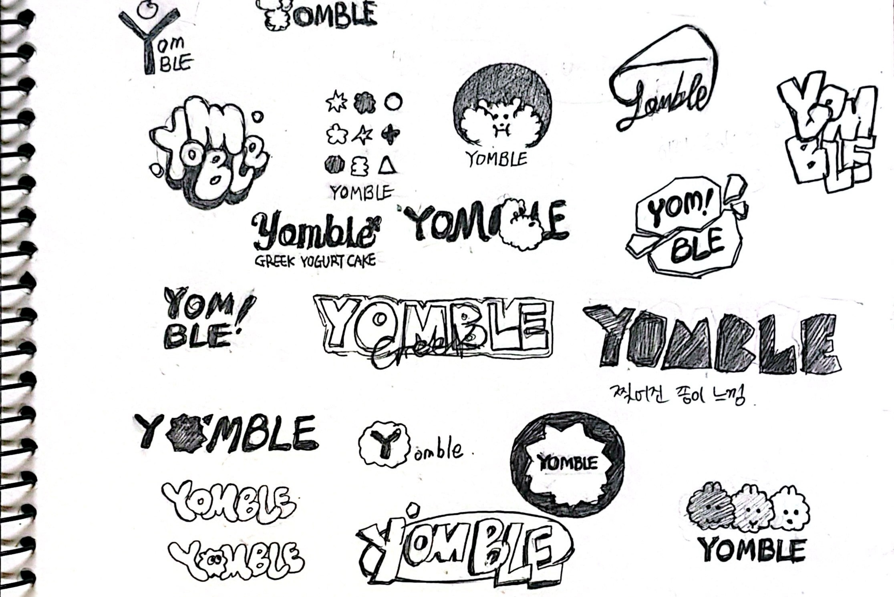

4주차 과제
나의 브랜드 로고 디자인 100개 시도하기. 100개가 생각보다 양도 많고 아이디어도 점점 고갈돼서 힘들었다. 여러 시안이 선택되어서 다행이었지만 여러 방향으로 디벨롭 하는 것이 어려웠다.
서울여자대학교 시각디자인전공 2학년의 미대 일상
나의 브랜드 로고 디자인 100개 시도하기. 100개가 생각보다 양도 많고 아이디어도 점점 고갈돼서 힘들었다. 여러 시안이 선택되어서 다행이었지만 여러 방향으로 디벨롭 하는 것이 어려웠다.
지난 주 작업한 로고를 발전시키며 브랜드 베이직 디자인 프레젠테이션을 제작했다. 서두에 나의 브랜드 아이덴티티를 다시 한번 강조하고, 정체성을 강화할 수 있는 로고 6가지를 최종적으로 제안했다.